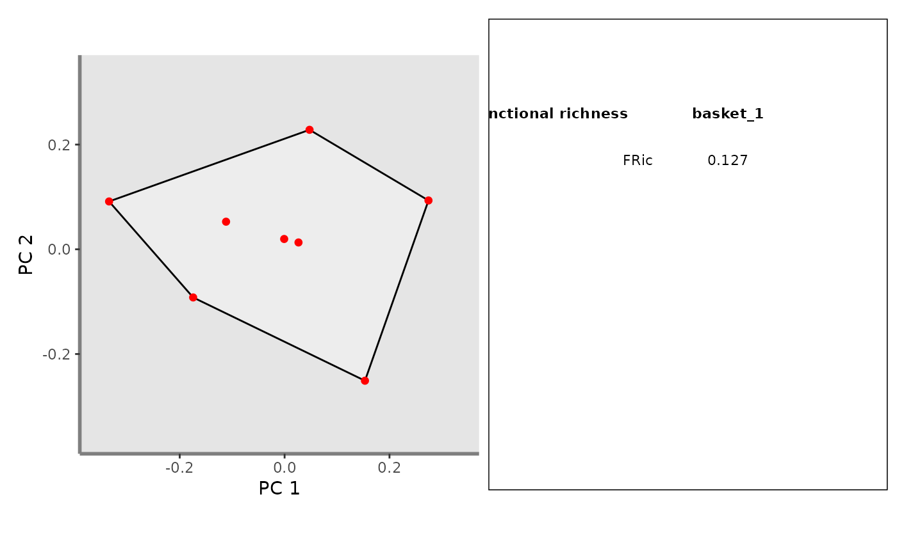
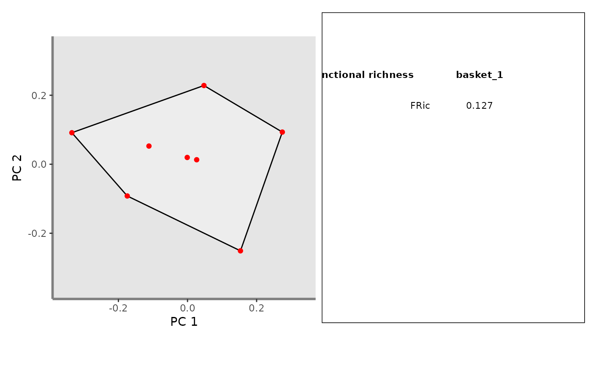

Plot individual plots along a pair of functional axes into a unique graph
Source:R/plot_multidim_layers.R
panels.to.patchwork.RdThis function gathers panels into a unique patchwork graph
with caption.
Examples
## Retrieve FRic plot:
# Load Species*Traits dataframe:
data("fruits_traits", package = "mFD")
# Load Assemblages*Species dataframe:
data("baskets_fruits_weights", package = "mFD")
# Load Traits categories dataframe:
data("fruits_traits_cat", package = "mFD")
# Compute functional distance
sp_dist_fruits <- mFD::funct.dist(sp_tr = fruits_traits,
tr_cat = fruits_traits_cat,
metric = "gower",
scale_euclid = "scale_center",
ordinal_var = "classic",
weight_type = "equal",
stop_if_NA = TRUE)
#> [1] "Running w.type=equal on groups=c(Size)"
#> [1] "Running w.type=equal on groups=c(Plant)"
#> [1] "Running w.type=equal on groups=c(Climate)"
#> [1] "Running w.type=equal on groups=c(Seed)"
#> [1] "Running w.type=equal on groups=c(Sugar)"
#> [1] "Running w.type=equal on groups=c(Use,Use,Use)"
# Compute functional spaces quality to retrieve species coordinates matrix:
fspaces_quality_fruits <- mFD::quality.fspaces(sp_dist = sp_dist_fruits,
maxdim_pcoa = 10,
deviation_weighting = "absolute",
fdist_scaling = FALSE,
fdendro = "average")
# Retrieve species coordinates matrix:
sp_faxes_coord_fruits <-
fspaces_quality_fruits$details_fspaces$sp_pc_coord
# Retrieve species coordinates matrix for the assemblage "basket_1":
sp_filter <- mFD::sp.filter(asb_nm = c("basket_1"),
sp_faxes_coord = sp_faxes_coord_fruits,
asb_sp_w = baskets_fruits_weights)
sp_faxes_coord_fruits_b1 <- sp_filter$`species coordinates`
# Reduce it to the two studed axes: PC1 and PC2:
sp_faxes_coord_fruits_b1_2D <- sp_faxes_coord_fruits_b1[, c("PC1", "PC2")]
# Set faxes limits:
# set range of axes if c(NA, NA):
range_sp_coord_fruits <- range(sp_faxes_coord_fruits)
range_faxes_lim <- range_sp_coord_fruits + c(-1, 1)*(range_sp_coord_fruits[2] -
range_sp_coord_fruits[1]) * 0.05
# Retrieve the background plot:
ggplot_bg_fruits <- mFD::background.plot(
range_faxes = range_faxes_lim,
faxes_nm = c("PC 1", "PC 2"),
color_bg = "grey90")
# Retrieve vertices names:
vert_nm_fruits <- vertices(sp_faxes_coord_fruits_b1_2D,
order_2D = TRUE, check_input = TRUE)
# Plot in white the convex hull of all fruits species:
ggplot_fric <- mFD::fric.plot(
ggplot_bg = ggplot_bg_fruits,
asb_sp_coord2D = list(basket_1 = sp_faxes_coord_fruits_b1_2D),
asb_vertices_nD = list(basket_1 = vert_nm_fruits),
plot_sp = TRUE,
color_ch = c("basket_1" = "black"),
fill_ch = c("basket_1" = "white"),
alpha_ch = c("basket_1" = 0.3),
size_sp = c("basket_1" = 1),
shape_sp = c("basket_1" = 16),
color_sp = c("basket_1" = "red"),
fill_sp = c("basket_1" = "red"),
size_vert = c("basket_1" = 1),
color_vert = c("basket_1" = "red"),
fill_vert = c("basket_1" = "red"),
shape_vert = c("basket_1" = 16))
ggplot_fric
 ## Create a caption summing up FRic values
# retrieve values to plot:
top_fric <- c("Functional richness", "basket_1", "")
asb_fd_ind <- alpha_fd_indices_fruits <- mFD::alpha.fd.multidim(
sp_faxes_coord = sp_faxes_coord_fruits[ , c("PC1", "PC2", "PC3", "PC4")],
asb_sp_w = baskets_fruits_weights,
ind_vect = c("fric"),
scaling = TRUE,
check_input = TRUE,
details_returned = TRUE)
#> basket_1 done 10%
#> basket_2 done 20%
#> basket_3 done 30%
#> basket_4 done 40%
#> basket_5 done 50%
#> basket_6 done 60%
#> basket_7 done 70%
#> basket_8 done 80%
#> basket_9 done 90%
#> basket_10 done 100%
values_fric <- c(round(asb_fd_ind$functional_diversity_indices["basket_1",
"fric"], 3), "")
# customize position of texts in the plot:
spread_faxes <- (range_sp_coord_fruits[2] - range_sp_coord_fruits[1])
hh <- c(1, 2.5, 4, 5.5)
vv <- 0.3
# plot window:
x <- NULL
y <- NULL
plot_caption <- ggplot2::ggplot(data.frame(x = range_sp_coord_fruits,
y = range_sp_coord_fruits),
ggplot2::aes(x = x, y = y)) +
ggplot2::scale_x_continuous(limits = range_sp_coord_fruits,
expand = c(0, 0)) +
ggplot2::scale_y_continuous(limits = range_sp_coord_fruits,
expand = c(0, 0)) +
ggplot2::theme_void() + ggplot2::theme(legend.position = "none") +
ggplot2::geom_rect(xmin = range_sp_coord_fruits[1],
xmax = range_sp_coord_fruits[2],
ymin = range_sp_coord_fruits[1],
ymax = range_sp_coord_fruits[2],
fill = "white", colour ="black")
# plot names of index and of assemblages:
h <- NULL
v <- NULL
top <- NULL
x <- NULL
y <- NULL
plot_caption <- plot_caption +
ggplot2::geom_text(data = data.frame(
h = range_sp_coord_fruits[1] + spread_faxes * 0.15 * hh[c(1,3:4)],
v = range_sp_coord_fruits[2] - spread_faxes * rep(0.2, 3),
top = top_fric),
ggplot2::aes(x = h, y = v, label = top),
size = 3, hjust = 0.5, fontface = "bold")
# plot FRic values:
values_lab <- NULL
data_caption <- data.frame(
h = range_sp_coord_fruits[1] + spread_faxes * 0.15 * hh[2:4],
v = range_sp_coord_fruits[2] - spread_faxes*rep(vv, 3),
values_lab = c("FRic", values_fric))
plot_caption <- plot_caption +
ggplot2::geom_text(data = data_caption,
ggplot2::aes(x = h, y = v, label = values_lab),
size = 3, hjust = 0.5, fontface = "plain")
## Create patchwork:
patchwork_fric <- mFD::panels.to.patchwork(list(ggplot_fric), plot_caption)
patchwork_fric

## Create a caption summing up FRic values
# retrieve values to plot:
top_fric <- c("Functional richness", "basket_1", "")
asb_fd_ind <- alpha_fd_indices_fruits <- mFD::alpha.fd.multidim(
sp_faxes_coord = sp_faxes_coord_fruits[ , c("PC1", "PC2", "PC3", "PC4")],
asb_sp_w = baskets_fruits_weights,
ind_vect = c("fric"),
scaling = TRUE,
check_input = TRUE,
details_returned = TRUE)
#> basket_1 done 10%
#> basket_2 done 20%
#> basket_3 done 30%
#> basket_4 done 40%
#> basket_5 done 50%
#> basket_6 done 60%
#> basket_7 done 70%
#> basket_8 done 80%
#> basket_9 done 90%
#> basket_10 done 100%
values_fric <- c(round(asb_fd_ind$functional_diversity_indices["basket_1",
"fric"], 3), "")
# customize position of texts in the plot:
spread_faxes <- (range_sp_coord_fruits[2] - range_sp_coord_fruits[1])
hh <- c(1, 2.5, 4, 5.5)
vv <- 0.3
# plot window:
x <- NULL
y <- NULL
plot_caption <- ggplot2::ggplot(data.frame(x = range_sp_coord_fruits,
y = range_sp_coord_fruits),
ggplot2::aes(x = x, y = y)) +
ggplot2::scale_x_continuous(limits = range_sp_coord_fruits,
expand = c(0, 0)) +
ggplot2::scale_y_continuous(limits = range_sp_coord_fruits,
expand = c(0, 0)) +
ggplot2::theme_void() + ggplot2::theme(legend.position = "none") +
ggplot2::geom_rect(xmin = range_sp_coord_fruits[1],
xmax = range_sp_coord_fruits[2],
ymin = range_sp_coord_fruits[1],
ymax = range_sp_coord_fruits[2],
fill = "white", colour ="black")
# plot names of index and of assemblages:
h <- NULL
v <- NULL
top <- NULL
x <- NULL
y <- NULL
plot_caption <- plot_caption +
ggplot2::geom_text(data = data.frame(
h = range_sp_coord_fruits[1] + spread_faxes * 0.15 * hh[c(1,3:4)],
v = range_sp_coord_fruits[2] - spread_faxes * rep(0.2, 3),
top = top_fric),
ggplot2::aes(x = h, y = v, label = top),
size = 3, hjust = 0.5, fontface = "bold")
# plot FRic values:
values_lab <- NULL
data_caption <- data.frame(
h = range_sp_coord_fruits[1] + spread_faxes * 0.15 * hh[2:4],
v = range_sp_coord_fruits[2] - spread_faxes*rep(vv, 3),
values_lab = c("FRic", values_fric))
plot_caption <- plot_caption +
ggplot2::geom_text(data = data_caption,
ggplot2::aes(x = h, y = v, label = values_lab),
size = 3, hjust = 0.5, fontface = "plain")
## Create patchwork:
patchwork_fric <- mFD::panels.to.patchwork(list(ggplot_fric), plot_caption)
patchwork_fric
